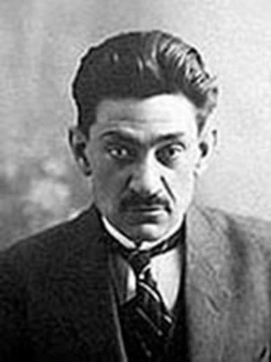
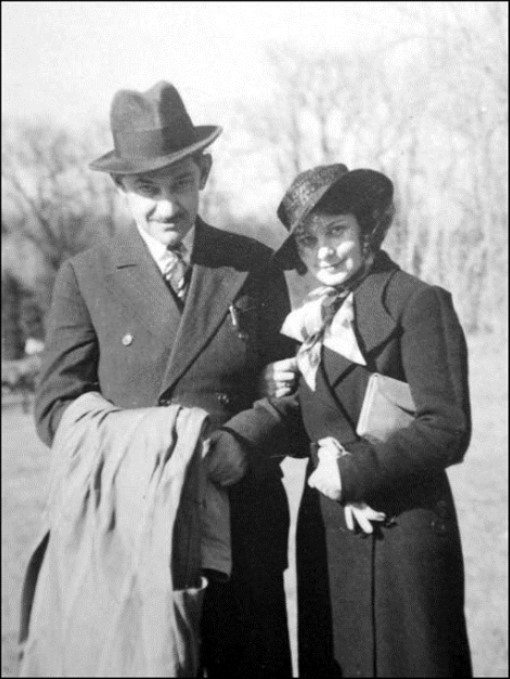
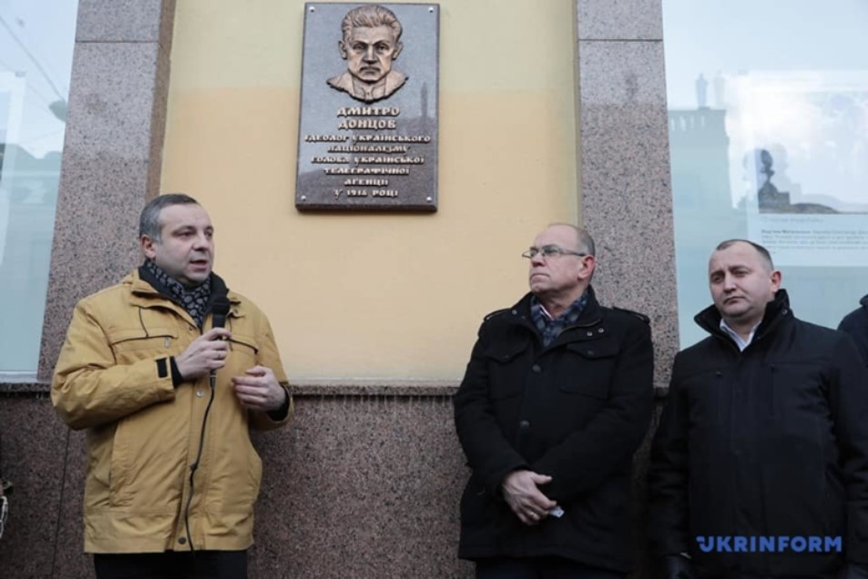
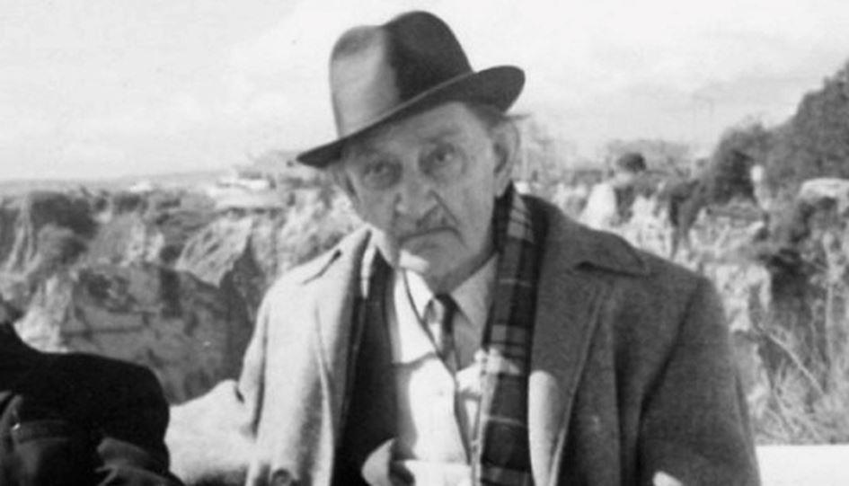

Nationalisme et révolution : le cas ukrainien (1ère partie)
par Lucien CERISE
Le nationalisme ukrainien a eu plusieurs pères fondateurs, intellectuels et hommes d’action. Dans le champ théorique, c’est l’œuvre de Dmytro Dontsov (1883-1973) qui domine les autres et qui est aujourd’hui appliquée en Ukraine presque à la lettre. Dmytro Dontsov est parfois surnommé le « Charles Maurras ukrainien » car il lui a repris la notion de « nationalisme intégral ».
Aux origines du nationalisme ukrainien : Dmytro Dontsov
Pour être juste, il faudrait dire un anti-Maurras, tant les conceptions des deux penseurs divergent sur le fond, au-delà d’une formule empruntée. On parle beaucoup de la germanophobie de Maurras. Il s’agissait surtout d’un rejet du romantisme et de son culte des émotions, qui seront à l’origine d’un renouveau du paganisme et de l’occultisme aux XIXème et XXème siècles. Maurras jugeait ces tendances culturelles propagées outre-Rhin parfaitement barbares et immatures sur le plan civilisationnel, et il leur préférait un certain rationalisme propre à l’esprit classique français et aux vertus grecques et chrétiennes de modération, de tempérance et de réflexivité.
À l’opposé, Dmytro Dontsov s’inspire du romantisme allemand et propose une philosophie politique entièrement tournée vers l’action et la révolution, ce qu’il appelle aussi le « nationalisme actif ». Pour Dontsov, il s’agit moins d’illustrer l’identité nationale ukrainienne dans une œuvre que de mettre au point la praxis concrète qui permettra de l’imposer sur un territoire donné. De fait, l’idée nationale n’est qu’une abstraction si l’on ne se donne pas les moyens d’affirmer physiquement sa souveraineté, par la violence et l’insurrection révolutionnaire s’il le faut.
Cette approche entretient une parenté avec la doctrine marxiste et son matérialisme dialectique, qui se présente comme une étude des rapports de forces et des antagonismes animant les groupes humains et écrivant l’Histoire par le mouvement pendulaire de leurs contradictions : un coup à droite, un coup à gauche, et la synthèse, volontaire ou pas, pour résultat global. Cette méthode expérimentale et factuelle, s’appuyant sur des phénomènes observables, fournit le cadre scientifique nécessaire à la technique du coup d’État et à la conquête du pouvoir immanent. Elle sera acclimatée aux milieux de droite traditionaliste par Charles Maurras sous le nom d’empirisme organisateur, ce qui l’amènera lui aussi à une réflexion sur les conditions de la révolution, qu’il couchera par écrit dans « Si le coup de force est possible. »
De son côté, Dmytro Dontsov adaptera cette approche à son nationalisme ethnique ukrainien après avoir fait ses premières classes politiques dans le socialisme, comme Mussolini ou certains membres du mouvement hitlérien. La vaste culture politique de Dontsov lui permettra de réaliser une synthèse de toutes ces influences, et d’y ajouter d’autres encore, issues de la psychologie et de la sociologie. Le Centre scientifique et idéologique Dmytro-Dontsov (Науково-ідеологічний центр імені Дмитра Донцова) propose en téléchargement son texte le plus abouti, sobrement intitulé Nationalisme (1926), dans lequel il développe des principes méthodologiques de prise du pouvoir par le conditionnement psychologique des masses 1 :
« J’ai mentionné pour commencer deux grands motifs de toute idée révolutionnaire ainsi que nationale : le premier est le volontarisme (l’anti-intellectualisme), le second est le militantisme (l’anti-pacifisme). Maintenant, donc, vient le troisième – le ‘romantisme’. Et aucune grande idée en confrontation avec les autres pour la domination n’est vivante si elle n’est pas imprégnée de cet esprit du ‘romantisme’. J’ai parlé de la nature romantique des grandes doctrines. Maintenant, il faut souligner leur deuxième aspect : le dogmatisme impassible. Ces doctrines apparaissent toujours accompagnées d’un ordre catégorique, d’un sentiment qui ordonne une obéissance obstinée. Ces idées (comme l’écrit Gustave Le Bon) sont combinées avec des ‘sentiments simples et extrêmes’… Elles sont acceptées ou rejetées par les masses comme les dogmes de la foi, ‘en bloc’, et sont considérées comme des vérités absolues ou des erreurs absolues… ‘Dieu ou Mammon’ [Gustave Le Bon, Psychologie des foules]. Tel est le caractère de ces doctrines, et seules de telles doctrines permettent normalement l’obéissance des masses, c’est-à-dire que ces doctrines sont combinées avec des sentiments émotionnels, simples et catégoriques. Un sociologue italien bien connu, Wilfredo Pareto, dit que l’histoire est faite par les ‘sentiments, instincts, désirs et intérêts’, qui essaient de motiver leurs activités rationnellement. L’histoire n’est pas une histoire de l’esprit, seulement des passions, elle ne connaît que des ‘actes illogiques’ (azioni non logiche). La masse est toujours plus soumise au toucher émotionnel qu’à la logique froide de l’esprit [Vilfredo Pareto, Trattato di Sociologia generale]. »
 Dmitry Dontsov avec la poétesse Elena Teliga, à la fin des années 1930Ces observations de Dmytro Dontsov sur l’irrationalité des masses et le rôle des passions brutes dans l’Histoire sont justifiées et de bon sens. En philosophie politique, elles doivent servir de constat moral réaliste – prenant en compte les faiblesses du cœur humain – pour ensuite travailler à l’éducation du peuple et à l’élévation de son niveau de conscience par la raison empirique et le sens des nuances. La foule irrationnelle n’est pas un but mais un point de départ. Or, chez Dontsov, le romantisme et les émotions apparaissent comme des fins en soi. C’est effectivement ce qui permet de simplifier l’esprit chez un maximum d’individus pour les embrigader et lever une armée entièrement dévouée à la cause. Dontsov travaille à élaborer un modèle de conscience non-réflexive, à contre-courant de l’évolution naturelle de l’esprit humain, lequel progresse normalement par boucles récursives action/réflexion, ou essai/erreur/correction, et complexité croissante. Mais pour Dontsov, la réflexion freine l’action, or il faut agir ! Comment ? Dontsov n’étant pas libéral, il sait que l’individu ne pèse rien en politique et que la seule échelle d’action pertinente est d’emblée collective. Cette conscience non-réflexive entièrement tournée vers l’action révolutionnaire aveugle doit donc être réalisée à l’échelle d’un peuple et d’une idée nationale. Il faut organiser les masses en les radicalisant et en les fanatisant dans un système émotionnel binaire amour/haine capable de transcender la morale bourgeoise conventionnelle au nom d’une idée supérieure 2 :
« Ce fanatisme des partisans d’une grande idée découle déjà de son caractère ‘religieux’. Un croyant considère sa vérité comme obligatoire pour tout le monde. Il déteste ‘fanatiquement’ tout ce qui s’oppose à son acceptation, en tant que seule foi salvatrice. Le ‘fanatique’ apprend sa vérité comme une révélation générale, qui doit être acceptée par les autres. D’où son agressivité et son intolérance à l’égard d’autres points de vue. Une croyance ferme aux slogans qu’il prononce comme la vérité inconditionnelle et obligatoire, l’amour de l’idée qu’il veut réaliser, l’immensité de la haine de tout ce qui entrave sa réalisation – telle est la somme des émotions qui enveloppe chaque vrai révolutionnaire, ou fanatique – et la nature extrême de ses pensées viscérales. C’est pourquoi l’amour et la haine vont de pair comme deux sentiments complémentaires chez chaque partisan d’une excellente idée. »

Plaque en l’honneur de Dmytro Dontsov inaugurée à Kiev en janvier 2019
Cette philosophie de l’action pure désinhibée, de la « jouissance sans entraves » en quelque sorte, possède des aspects transgressifs et amoraux évidents. Plus encore que chez Marx, Dontsov puise son inspiration chez Nietzsche pour développer l’idée d’une élite supra-morale ne s’autorisant que d’elle-même pour guider un peuple zombifié vers un avenir glorieux. Dans un ouvrage de 2015 rassemblant les actes d’un colloque international sur l’Ukraine tenu en 2012, l’universitaire italienne Renata Caruso faisait les observations suivantes 3 :
« La doctrine du nationalisme ukrainien de Dmytro Dontsov, conçue juste avant la Première guerre mondiale, montre l’influence du romantisme allemand et de cette philosophie vitaliste, transformée ensuite en mouvement populaire par le fascisme et le nazisme. (…) Dontsov voulait créer un nouvel État dans lequel l’élite dirigeante aurait été imprégnée d’une nouvelle idée nationale, une idée libérée de toute contrainte morale communément admise par la société de l’époque. Cette élite, selon Dontsov, devrait prêcher et défendre sa propre moralité et son propre dogme moral. Dontsov a également expliqué [dans son dernier ouvrage] comment la société ukrainienne devait être unifiée : ‘Tout d’abord, nous devons établir une série de dogmes, une série de lois ou de normes, une série d’axiomes, dans tous les secteurs de la vie sociale… Nous devons établir notre propre vérité, unique et infaillible… Il faut marteler ce nouveau credo et cette nouvelle vérité dans les têtes et dans la foule, et liquider sans pitié ceux qui expriment des doutes… Un groupe d’élite, une minorité, assumera un rôle d’aimant. Ce groupe imposera son propre point de vue et son propre dogme sur les pensées et la volonté des masses. Cette coterie d’élite sera organisée non pas comme un parti politique, ni comme une sorte de syndicat, mais plutôt comme une fraternité disciplinaire qui conduira les masses. Le fanatique possède sa propre vérité acclamée qui doit être entendue par les autres et d’où découle sa propre agressivité et son intolérance envers tous les autres points de vue.’ (By Cross And Sword, 1967, p.123). Par conséquent, selon Dontsov, le nationalisme intégral doit être basé sur les émotions, ou plutôt sur l’émotivité, une condition nécessaire pour protéger ses adeptes des forces sœurs de la logique et de la rationalité. »
Le nationalisme intégral de Dontsov est donc aussi une culture du premier degré intégral. Culture de l’immédiateté, dans laquelle il faut adhérer aux phénomènes sans distanciation, ne jamais les interpréter, ne jamais en douter. Il est vrai que la logique et la rationalité introduisent à la réflexion critique et contribuent ainsi à semer le doute, le second degré, la distance, ce qui risque de mitiger l’impulsivité et d’affaiblir la détermination. Or, Dmytro Dontsov veut une détermination sans faille de ses troupes. Dans quel but ? Le recours aux émotions primaires fortifiantes contre une pensée rationnelle jugée castratrice prend ses racines dans une vision géopolitique intrinsèquement conflictuelle. Il faut préparer le peuple à la guerre, et c’est tout. Dans son ouvrage de 1921, Les fondements de notre politique, Dmytro Dontsov expose sa conviction, à savoir une confrontation inévitable entre la Russie et l’Occident, plus largement entre l’Eurasie et l’Europe de l’Ouest dont l’Ukraine ferait partie – selon Dontsov. Pour anéantir la Russie, tous les coups sont permis et toutes les alliances sont permises. Au service de son idée fixe qui est de détruire la Russie, Dontsov fait feu de tout bois et montre un opportunisme tactique tout azimut assez remarquable, notamment dans le chapitre 3 qui porte comme titre « Idée centrale de la politique étrangère de l’Ukraine : les alliés de l’Ukraine sont les États qui sont contre la Russie » 4 :
« La force sur laquelle nous devons compter est ce qu’on appelle le prétendu impérialisme des puissances européennes, puisque sa direction recoupe la direction de notre politique. (…) Dans le détail, le côté positif de ce postulat est la recherche d’une alliance avec les pays dont les intérêts contredisent pour l’instant les intérêts de la Russie. Ce principe doit être proclamé franchement, sans crainte des politiciens-voyous ni de nos propres internationalistes, baignant dans la propagande bolchevique, hurlant contre ‘la vente du pays’ à l’impérialisme de la Triple-Entente ou de l’Allemagne. Ceux-là ou d’autres États sur lesquels nous pouvons compter peuvent être ‘impérialistes’ ou ‘réactionnaires’, mais cela nous est égal et ne doit pas nous égarer. C’est un fait historique qu’aucune nation ne s’est libérée seulement par ses propres moyens. Les nations n’ont atteint leurs objectifs politiques qu’en inscrivant leur travail dans un cercle d’idées plus générales, en les liant aux intérêts d’autres États. Nous ne devons faire aucune exception à cette règle, nous devons compter sur toutes les forces qui, en nous aidant, ont le même but : la dislocation de la Russie. »
Une puissante exaltation romantique révolutionnaire contre la Russie anime encore aujourd’hui le cœur battant du nationalisme ukrainien. Cette caractéristique explique pourquoi les ennemis de la Russie dans les capitales occidentales se sont très vite penchés sur ces « nationalistes » qui ne demandaient qu’à se battre avec eux, voire pour eux. Dès les années 1930, la Grande-Bretagne et le Troisième Reich ont recruté dans leurs services secrets un certain Stepan Bandera, le chef le plus radical des nationalistes ukrainiens, fondateur de l’OUN-B (Organisation des nationalistes ukrainiens, tendance Bandera) et cofondateur de sa branche de guérilla paramilitaire, l’Armée insurrectionnelle ukrainienne (UPA, Українська Повстанська Армiя). Bandera mettra en pratique les grands principes définis par Dontsov consistant à chercher tous les alliés possibles et imaginables pour attaquer sans relâche Moscou, ce qui se concrétisera en deux temps : pendant la Deuxième guerre mondiale, par la création d’unités de supplétifs ukrainiens au sein de l’armée du Reich, scellant ainsi le pacte entre le national-socialisme allemand et le national-socialisme ukrainien, encore visible dans l’Ukraine contemporaine ; après la Deuxième guerre mondiale, par l’intégration de la mouvance de Bandera (les bandéristes) dans les réseaux Stay Behind et Gladio de l’OTAN, pour mener clandestinement la guerre froide contre le bloc communiste, et aujourd’hui contre la Russie – la nature du régime en place à Moscou n’ayant aucune importance. Dès ses origines, le nationalisme ukrainien prêtait donc largement le flanc à une instrumentalisation par des puissances géopolitiques impérialistes et révolutionnaires anti-russes. Reconstituons maintenant l’arrière-fond historique et les conditions idéologiques et pratiques de son développement concret.
L.C.
Texte de son intervention de à la conférence « Mai 68-2018, 50 ans de révolutions colorées », organisée le 24 novembre 2018 à Nice par l’association Culture Populaire, avec Jean-Michel Vernochet et Pierre-Antoine Plaquevent.
NOTES
1. Дмитро Донцов, Націоналізм, « Частина друга. Чинний націоналізм. Pозділ III. Романтизм, догматизм, ілюзіонізм – третя вимога націоналізму », Нове життя (Dmytro Dontsov, Nationalisme, « Deuxième partie. Nationalisme actuel. Chapitre III. Romantisme, dogmatisme, illusionnisme : la triple exigence du nationalisme », éditions Nove Zhytia), 1926, p. 185 : « Я згадав в горі дві головні підстави всякої революційної ідеї, отже і національної : перша – волюнтаризм (антиінтелектуалізм), друга – войовничість (антипаціфізм). Тепер, отже, до цього приходить третя – ‘романтика’. І ні одна велика ідея, що сперечається з другими за панування, не є жива, коли вона не перейнята цим духом ‘романтики’. Я говорив про романтичний характер великих доктрин. Тепер треба підкреслити їх другий аспект : догматизм, безсанкціональність. Ті доктрини завжди з’являються в супроводі категоричного наказу, почуття, що наказує безоглядний послух. Ці ідеї (пише Ле Бон) сполучені з ‘простими і екстремними почутями’… Вони приймаються масою мов догми віри, ‘en-bloc’, або відкидаються, уважаються за абсолютні правди або абсолютні помилки… ‘Aбо Бог, або мамона’ (Le Bon. – Psychologie der Masse, La psychologie politique). Такий характер цих доктрин, і лише такі доктрини знаходять звичайно послух у масах, себто доктрини сполучені з амотивними почуваннями, прості й категоричні. Знаний італійський соціолог, Вільфредо Парето, каже, що історія робиться ‘почуваннями, інстинктами, пожаданнями та інтересами’, які стараються мотивувати розумом свою діяльність. Історія не є історія розуму, лише пристрастей, вона знає тільки ‘нелогічні вчинки’ (azioni non logiche). Маса все більше податна емоційним зворушенням, як холодній логіці розуму (Vilfredo Pareto. – Trattato di Sociologia generale, Firenze, 1916). »
2. Op. cit., « Pозділ IV. Фанатизм і ‘аморальність’, як Четверта вимога волевого націоналізму », (« Chapitre IV. Fanatisme et ‘amoralité’ comme quatrième exigence du nationalisme volitif »), p. 192 : « Цей фанатизм сторонників великої ідеї випливає вже з її ‘релігійного’ характеру. Віруючий дивиться на свою правду як на для всіх обов’язуючу. Він ‘фанатично’ ненавидить усе, що протиставлюється приняттю його, одиноко спасенної віри. ‘Фанатик’ – узнає свою правду за об’явлену, загальну, яка має бути прийнята іншими. Звідси його аґресивність і нетерпимість до інших поглядів. Тверда віра в гасла, що він голосить, як безуслівну і обов’язкову для всіх правду, любов до ідеї, яку він хоче здійснити, безмірна ненависть до всього, що перешкоджає їх здійсненню – ось та сума переживань, яка огортає всякого правдивого революціонера, фанатика – з конечности і з натури боронених ним думок. Ось чому любов і ненависть усе ідуть в парі, як два доповняючі себе почування з кожного сторонника великої ідеї. »
3. Renata Caruso, « Dmytro Dontsov’s Ideology of Integral Nationalism in Post–Soviet Ukraine », in Ukraine twenty years after independence : Assessments, Perspectives, Challenges, Aracne, 2015, pp. 265-274.
4. Дмитро Донцов, Підстави нашої політики, « 3. Основна ідея зовнішньої політики України. Союзники України – ті держави, які проти Росії », 1921, pp. 87-88 : « Тою силою, на котру ми маємо спертися, є так званий імперіалізм європейських держав, оскільки його напрямок покривається з напрямком нашої політики. (…) Позитивна сторона сього постулату, його деталізація – се шукання союзу з тими краями, інтереси котрих суперечать в дану хвилину інтересам Росії. Сю засаду треба проголосити отверто, не лякаючись політичних пройдисвітів або власних інтернаціоналістів, заметеличених большевицькою пропагандою, гримаючих проти ‘запродання країни’ антантському чи німецькому імперіалізмові. Ті чи інші держави, на котрі можна числити, можуть бути ‘імперіалістичні’ чи ‘реакційні’ – се нас нічого не обходить. Се історичний факт, що ні одна нація не визволялася лише власними силами. Здійснити свої політичні цілі вдавалося їм тільки тоді, коли вони втягали свою справу в круг ідей загальнішого характеру, зв’язували її з інтересами інших держав. Ми не повинні робити ніякого винятку з того правила, мусимо спиратися на кожну силу, котра помагаючи нам має ту саму мету : поділ Росії. »
5. Alexandre Soljenitsyne, La Russie sous l’avalanche, Fayard, 1998, pp. 136-137.
Partager cette page